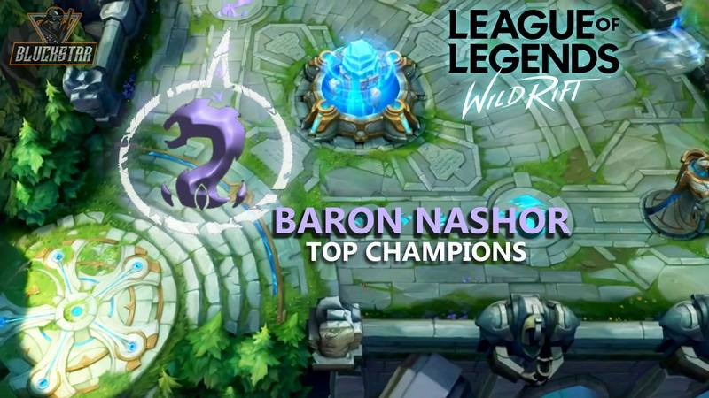
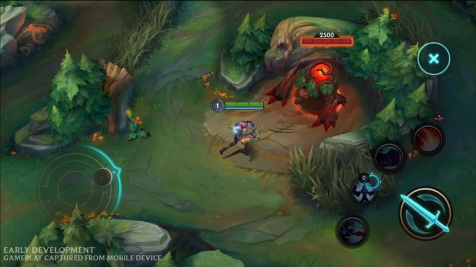
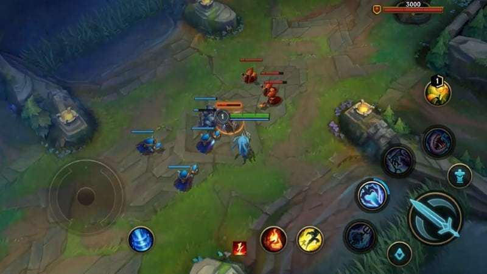
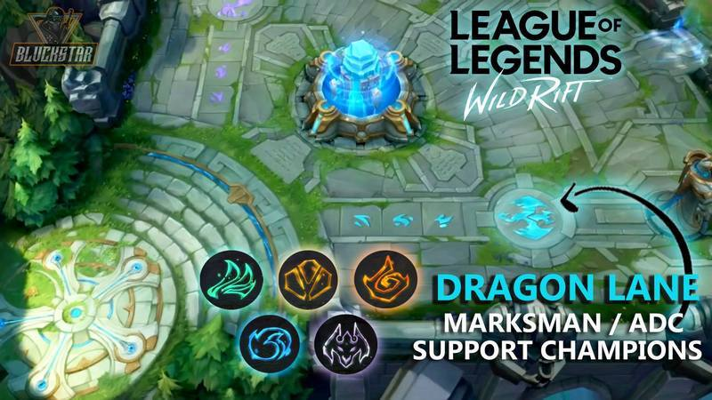

Solo Baron Lane

Tips Wild Rift untuk role pertama akan membahas tentang Baron lane. Baron lane adalah posisi yang ditandai dengan warna ungu ketika kamu baru masuk ke dalam pertempuran. Posisi ini diisi oleh Champion-champion kuat untuk ber-duel 1vs1 atau bahkan 1vs2. Mengapa? Karena tugas utama dari Baron lane adalah melakukan split push ke arah turret lawan -- tapi tetap hadir teamfight saat dibutuhkan.
Nah, dalam menjalankan tugasnya, pemain yang mengisi posisi Baron lane bisa terkena gank berkali-kali oleh lawan yang mengisi posisi jungle (posisi selanjutnya yang akan kita bahas). Maka dari itu, skill micro (penguasaan hero, dari segi mekanik dan penggunaan skill) sangat dibutuhkan oleh orang-orang yang mengisi posisi Baron lane.
Untuk pemilihan Champion-nya sendiri, biasanya Baron lane akan diisi oleh tank atau fighter. Namun, tidak mustahil juga diisi oleh marksman yang punya skill escape cukup tinggi, seperti Vayne -- untuk meng-counter para tank atau fighter yang menggunakan serangan melee.
Jungle Lane

Tips Wild Rift berikutnya adalah tentang jungle lane. Bisa dibilang posisi ini memiliki dua tugas utama yang sangat penting. Pertama, untuk membantu para laner menguasai lane mereka dengan melakukan gank efektif. Kedua, mengamankan objektif yang berada di sungai, seperti Dragon (monster sungai yang memiliki buff) dan Rift Herald (monster penghancur turret yang hanya hadir di early game).
Berbeda dengan role lainnya yang mendapatkan exp dari minion, jungle lane justru mengambilnya dari monster-monster yang ada di hutan (sejak awal permainan). Role ini juga memiliki sebuah spell khusus untuk bisa bertahan di hutan, yaitu Smite.
Smite berfungsi untuk menghabiskan HP monster di hutan dengan cepat. Damage yang dihasilkannya juga bertambah setiap kali digunakan.
Untuk Champion jungle lane, biasanya dipilih berdasarkan tingkat sustain saat berada di hutan (punya skill lifesteal atau regen HP) dan presentasi ganking untuk membantu laner (punya skill crowd control kejutan, semacam slow dan stun).
Middle Lane

Tips Wild Rift selanjutnya akan membahas tentang middle lane. Peran pemain yang mengisi posisi middle lane bisa dibilang sangat besar untuk tim. Ia harus bisa mendominasi lane agar bisa membantu rekan setimnya yang berada di side lane. Dan, untuk pemilihan Champion-nya, biasanya middle lane diisi oleh mage dan assassin karena punya tingkat clear wave minion yang tinggi.
Selain penguasaan micro, pemahaman macro pemain middle lane juga harus bagus. Mengapa? Posisi middle lane rentan sekali terkena gank, karena itu pemain harus pandai-pandai melihat area sekitar serta mini map yang berada di pojok atas layar.
Oh iya, karena pemain yang mengisi middle lane juga berperan sebagai damage dealer, jadi jangan sering-sering mati, ya. Selalu jaga posisi ketika masuk teamfight dan bermain aman agar bisa membawa tim meraih kemenangan -- meski sedang dalam keadaan behind (tertinggal).
Carry, Duo Dragon Lane

Tips Wild Rift berikutnya ada carry yang bakal mengisi posisi Dragon lane bersama dengan support. Posisi Dragon lane ditandai dengan warna biru muda di dalam map -- sedangkan Baron lane berwarna ungu.
Seperti game MOBA pada umumnya, tugas carry adalah menggendong tim guna meraih kemenangan. Untuk pemilihan Champion-nya, carry biasa diisi oleh marksman. Namun, untuk beberapa kasus, fighter seperti Yasuo juga bisa digunakan untuk mengisi posisi carry (jika memang dibutuhkan).
Support, Duo Dragon Lane
Terakhir, ada tips Wild Rift untuk support atau role pasangan dari carry. Tugas support adalah melindungi carry ketika farming ataupun teamfight, sehingga ia bisa mendapatkan core item lebih cepat -- sekaligus membawa tim meraih kemenangan.
Perlu kamu ingat, support sangat diharamkan mengambil last hit di dalam Wild Rift. Mengapa? Karena setiap minion yang mati di dekatmu tetap akan memberikan gold. Sehingga, hasil gold last hit bisa kamu berikan ke carry agar lebih cepat kaya.
Selain itu, support juga berperan penting sebagai informan dari tim. Dan, karena di sini terdapat sistem ward, kamu bisa maksimalkan ward tersebut untuk mencari informasi lawan. Letakkan di tempat-tempat strategis untuk menghindari ganking lawan. Letakkan juga di jalur sungai untuk menghindari lawan mengambil buff Dragon.
Perlu kamu ingat bahwa setiap MOBA mempunyai gaya mainnya tersendiri. Jadi jangan sampai gaya permainan di MOBA lain dibawa ke LOLWR. Yang ada malah kamu jadi bulan-bulanan player di situ. Ada baiknya jika kamu belajar beradaptasi.